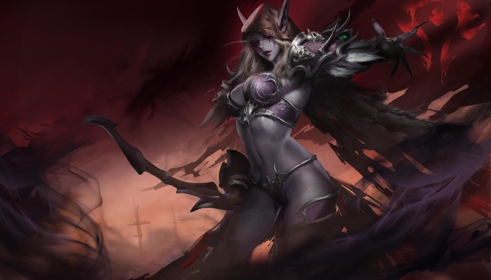

告别坐牢副本！魔兽Plus2.0高人气改动盘点
玩魔兽怀旧Plus服的人基本都有同感，这一版现有的副本问题其实挺明显。老副本地图绕路绕得头疼，一趟本下来大半时间都耗在赶路上面，玩法来回重复玩久了很容易腻。玩家们自发投票想改的这些内容，不是凭空瞎提想法，每一条都是平时组队单刷时实打实碰到的糟心事。
不少玩家最想先动手改动的就是三座老牌副本：诺莫瑞根、暴风城监狱还有失落神庙。这三张图原版路线绕得让人烦躁，之前探索赛季里它们被改成了团队团本，可团本要人多组队凑人，日常刷材料练级根本不方便。
国内玩怀旧服的大多是单机慢慢玩、练小号慢慢升级，固定凑团打大型本太耗时间精力，五人本才是平时上线最常玩的内容。把曾经改成团本的副本调回五人模式，不管是练新号刷装备，还是攒材料囤物资都刚刚好，刚好贴合大部分人佛系养老的游玩习惯，也算是补上当年打本绕图留下的遗憾。
比起副本本身改地图改机制，怎么组队进本、副本难度怎么设定，反而更影响每天上线的游戏体验。大伙不太想要正式服那种限时逼节奏的大秘境，更愿意沿用TBC当年节奏宽松的英雄难度副本。另外希望能加上查找组队的功能，但依旧保留自己跑到副本门口的设定，再加上副本门口就能拉人的集合石，既不用漫无目的蹲人组队，也不会丢了怀旧服跑本的氛围。

奥特兰克山脉这边新增的辛迪加议会副本，是所有新方案里支持人数最多的。等级卡在36到41级，顺着激流堡后续任务就能接上这条线，去拉文霍德庄园接任务清理辛迪加势力，盗贼玩家还能接到专属任务刷对应声望。
国内不少怀旧玩家很看重故事线完整度，原版魔兽里好多支线任务做到一半就断了，不少势力后续没有交代。这个副本刚好把断掉的剧情接上，还有专属职业内容，不是单纯加个本用来刷装备，所以认可度远高于其他新副本方案。
排在第二的血色领地，之前是Plus服第八阶段的终局团本，剧情把血色十字军整条故事线收束完整，口碑一直很好。玩家希望把它改成五人本，还能衔接灰烬使者橙武后续任务线，不用组团攻坚，普通玩家也能走完这条经典武器剧情。
除了中等等级的剧情副本，玩家还盼着多出一些适合满级之后反复刷的内容。一是卡拉赞地穴，顺着达拉然法师任务往下延伸，跟着肯瑞托和麦迪文处理各地失控的魔法；二是幽魂之地死亡之痕这片户外区域，地图内容足够单独做成一个高级副本，丰富后期可玩内容。
低级练级区间也有新副本提案，石爪山脉北边靠近湖泊的风险投资公司要塞，做成25到30级副本。联盟这边接着迪菲亚兄弟会的任务往下走，部落则对应热砂港相关剧情，小号升级不用一直重复老地图任务，练级路线能多一个选择。

艾萨拉的木喉监狱也拿到了上千点赞，木喉熊怪在原版里戏份不多，这个副本设定是族群关押邪能囚徒的地方，随着腐化加重封印松动，需要玩家前去处理，把60版本里埋没的一小段剧情补全。
除此之外玩家还提了不少更宏大的拓展方向，翡翠梦境、奥丹姆、凄凉山，还有60版本时期没开放的诺森德板块，都有人提议做成副本，能看出来大家都希望后续版本能再多填充不少新内容。
这么多投票提出来的修改方向，核心诉求其实特别简单。不想被拖沓重复的刷本流程消耗耐心，把原本残缺的剧情故事补全，不管是刚起步练小号，还是满级之后休闲刷本，各个等级段都有合适的内容可以玩。这些想法本质上，就是想守住怀旧服最原本的游玩氛围。
Plus系列一直愿意参考玩家的想法调整版本内容，这些被大家反复提起的副本改动，既能填上早年版本留下的剧情缺口，也能让日常打本轻松不少。这么多改动和新副本里，你最希望哪一项实装到后续版本里？可以说说自己的想法。
关于我们
📱 公众号名称：三天游戏
✍️ 作者：曾三天
扫码关注公众号，获取每日最新资讯

商务合作与版权
商务合作 / 内容投稿 / 品牌推广
请关注公众号「三天游戏」后台留言联系
版权声明：本文由作者整理，转载需注明出处。